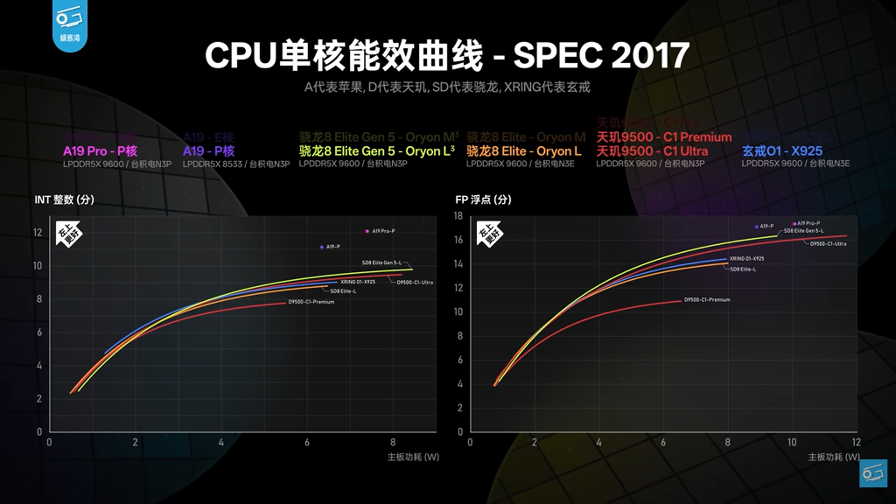

The Illusion of Innovation: A Deep Dive into the Oyron 3 Architecture
When Qualcomm launched the Oyron 3 architecture, the tech world expected a generational leap. Instead, after reading the deep reverse-engineering data published in a recent research paper (arXiv:2411.13900), I am looking at the second most disappointing architecture of the year.
While it narrowly avoids the top spot, that dishonor belongs to ARM’s catastrophic C1 cores, which failed on almost every metric. The Oyron 3 takes a firm silver medal in the "Most Disappointing" Olympics.
If you look at the raw design, the Oyron 3 is essentially a clone of Apple's 2020 Firestorm architecture, the foundation of the legendary M1 chip. People inevitably ask, "If it is basically a six-year-old architecture, why does it score so well in modern benchmarks?"
The short answer is brute force, manufacturing luck, and benchmark targeting. Four years of semiconductor advancements have allowed chipmakers to push clock speeds to an extreme 4.6GHz. However, before we get into the technical details, we have to answer the most obvious question. Why does a 2026 Qualcomm chip look exactly like a 2020 Apple chip, and why hasn't it evolved at all?
The answer isn't just a lack of imagination. It likely comes down to legal survival.
1. The ARM Lawsuit and the "Clean Sheet" Rumors
To understand the Oyron 3, you have to look at its troubled history. In 2019, a group of top-tier Apple chip architects, the designers behind Apple’s Firestorm cores, left to form a startup called Nuvia. In 2021, Qualcomm bought Nuvia for $1.4 billion to build a custom, world-beating CPU: the Oyron (also known as Oryon).
Because these were the exact same engineers who designed Apple's Firestorm, the first iterations of Oyron predictably looked just like Firestorm. They built what they knew best. But then disaster struck.
ARM sued Qualcomm. ARM claimed that the specific custom-core licenses Nuvia held could not legally be transferred to Qualcomm. ARM's demand was apocalyptic. They wanted Qualcomm to destroy all Nuvia-based designs. This meant the sudden death of the early Oyron architecture.
Facing the doomsday scenario of losing the lawsuit and having no flagship processor to sell, widespread industry rumors suggest Qualcomm hit the panic button. According to these unconfirmed reports, Qualcomm ordered their engineering team to execute a massive "clean sheet" redesign to create the Oyron 3.
What does a "clean sheet" redesign mean? In the tech industry, it means starting completely from scratch with a blank sheet of paper. To protect themselves legally, the engineers would be forbidden from using the original, legally contested Nuvia blueprints or source code. They would have to build a brand-new, legally distinct processor from the ground up that could achieve the same performance goals.
But here is the incredible irony of this rumored strategy: Because the team was allegedly rushed, panicked, and made up of the exact same engineers who designed the original chips, they started with a blank sheet of paper and simply drew the exact same picture from memory. The mandate was to build a legally safe chip, but human habit prevailed. Whether an officially mandated clean-sheet redesign or just extreme risk aversion, the result is the same. The "new" Oyron 3 ended up being a legally scrubbed, exact functional clone of the 2020 Apple architecture they had built years ago.
2. The Front-End: Forced to Stay Stubborn
If the clean-sheet rumors are true, the engineering team was essentially recreating their past work from scratch under immense pressure, which explains why they didn't upgrade the CPU's fundamental structure. This is glaringly obvious in the CPU's "front-end," which is responsible for fetching code instructions and decoding them. The Oyron 3 uses a coupled front-end, exactly like the Nuvia team's old Apple chips.
Coupled Front-End (Oyron's choice): Branch prediction (the CPU guessing where the code will go next to save time) and instruction fetching happen in the exact same cycle. This is a safer, highly accurate, and much easier design to engineer. If the CPU guesses wrong, it recovers quickly.
Decoupled Front-End (The modern alternative): Prediction runs ahead of fetching. The CPU guesses several steps into the future and builds a buffer of instructions. This is vastly harder to design, but it is fundamentally superior for modern, heavy workloads.
By sticking to a coupled design, the engineers prioritized rebuilding what was safe and familiar over the high-throughput capabilities required by modern applications. They cloned their own past instead of building for the future.
3. The Smoking Gun: The November 2024 Research Paper (arXiv:2411.13900)
If you want undeniable academic proof that Qualcomm simply copy-pasted their old homework, the paper I mentioned earlier, titled "Dissecting Conditional Branch Predictors of Apple Firestorm and Qualcomm Oryon for Software Optimization and Architectural Analysis", is the smoking gun.
In this paper, researchers built a highly advanced reverse-engineering pipeline to peek inside the black box of these chips. They managed to fully reconstruct the predictors (the system that guesses code paths) of both the Apple Firestorm and the Qualcomm Oyron.
What they found was a 1:1 structural match:
- The Blueprint: Both predictors use the exact same TAGE setup with six memory tables.
- The Math: Apple used a highly customized "Path History Register" (PHR) to track code history. Oyron uses the exact same complex PHR method, right down to the specific bit hashes.
But the researchers discovered something even more fascinating. Because Qualcomm blindly recreated their old architecture from memory, they accidentally rebuilt its unpatched hardware flaws as well.
The paper identified two major bugs baked into this specific 2020 predictor design:
- The Scatter Effect: Sometimes, a single branch of code maps to an excessive number of memory table entries, spreading its history too thin. The CPU struggles to "learn" the pattern because the data is scattered everywhere.
- The Annihilation Effect: In complex code, two entirely different branches can coincidentally generate the exact same historical hash. They end up colliding in the memory table, "annihilating" each other's traces and wiping out the CPU's prediction memory.
These flaws cause the CPU to guess wrong and waste time. By treating their old design as a sacred blueprint that had to be recreated to save the company, the engineers baked a six-year-old architectural flaw straight into Qualcomm's newest flagship chip.
4. The Benchmark Illusion: SME, 20W Power Spikes, and Geekbench vs. SPEC
If the architecture is just an overclocked, recreated 2020 design with small memory tables and unpatched flaws, how does Oyron 3 look so good on paper?
It comes down to "teaching to the test" and exploiting how different benchmarks handle power limits. When we plot Oyron's performance across different testing suites, a glaring anomaly appears. In Geekbench 6, the Oyron crushes its competitors. But in SPEC, a much more rigorous, realistic, and authoritative industry benchmark used by engineers, its performance completely falls apart.

There are two major reasons for this discrepancy.
First, the massive jump in Oyron's Geekbench 6 performance is mostly because of the new SME (Scalable Matrix Extension) cores. Geekbench 6 disproportionately rewards specific matrix math instructions. By bolting on SME units and massive Floating Point schedulers, Qualcomm artificially inflated their Geekbench scores without actually improving the underlying core architecture.
Second, and perhaps more concerning, is the power consumption. To force this architecture to hit 4.47GHz, the chip draws a staggering 20W of peak power. This is thermally unsustainable for a mobile chip using PoP (Package-on-Package) packing, where the RAM is stacked directly on top of the CPU, trapping heat.
In a long-term benchmark like SPEC, which runs continuously, the chip quickly hits this thermal wall, overheats, and is forced to throttle its speed drastically. The 20W peak is a sprint speed that cannot be maintained. However, Geekbench runs in short bursts with pauses between tests. This allows the Oyron 3 to sprint at a suicidal 20W for a few seconds to post a massive score, then cool down during the break.
In Geekbench, the 20W power draw is feasible because it is brief. In SPEC, it is unsustainable. The result is a chip that looks world-beating in short sprints but collapses under the sustained pressure of real-world heavy lifting.
Conclusion: Hope for V4?
Despite all the criticisms, Oyron 3 gets the job done. It succeeds only because Qualcomm bowed deeply to TSMC's modern 3nm manufacturing prowess, allowing them to brute-force a massive 1.4GHz+ frequency advantage. Without that extreme clock speed, the benchmark-gaming SME cores, and the unsustainably high power draw, this architecture would perform exactly like the six-year-old Apple chip it is based on.
There is virtually no original thought here. It is a processor likely born out of legal panic. It avoids being the absolute worst architecture of the year only because ARM's C1 was such a colossal failure.
However, there is a glimmer of hope. If the rumors are true, the Oyron 3 was a sacrificial lamb. It was a "clean sheet" recreation designed to satisfy lawyers and ensure Qualcomm had something to sell. Now that this legal baseline has been established, the engineers should finally be free to innovate. We have to pin our hopes on Oyron V4. With the legal panic (hopefully) behind them, V4 is the generation where Qualcomm must finally escape the ghost of the Apple M1, stop looking in the rearview mirror, and finally show us something truly new. If they don't, even overclocking won't be enough to save them next time.